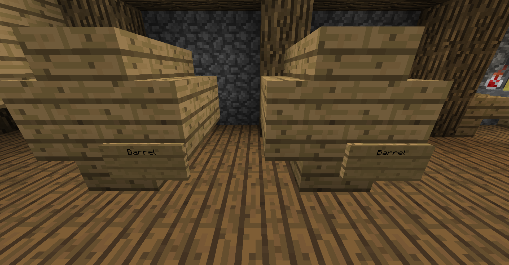
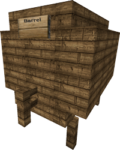

Effects of alcohol
Some drinks have an alcohol level, and when consumed your alcohol level will increase. Alcohol has various effects on the player:
- Vomiting
- Scrambling speech
- Difficulty walking
- Fainting (being kicked) at max alcohol level
- Trouble rejoining when very drunk
- Waking up at weird places when rejoining
In addition, drinks can have other negative or positive effects other than these.
To lower your alcohol level, you can either wait, eat bread, or drink milk.
Creating drinks
Fermentation
To begin creating a brew, gather the ingredients you want (you will need to experiment for the perfect brew). Then place a cauldron filled with water over a source of heat (such as fire). Right click the cauldron with your ingredients, and then wait a few minutes. You can then fill bottles with your ferment.
You can click a cauldron with a clock to see how long the ingredients have been fermenting.
Distillation
Whether this process is required or not, and the amount of times required to do it depends on the brew.
To distill a brew, put the brew with ferment into a brewing stand with glowstone dust in it.
Be careful, as brews take different times to distill, and some brews even require multiple distillings.
Aging
Whether this process is required or not, and the amount of time you need to wait depends on the brew.
After distilling your brew, you sometimes need to age it. To age it, you put your drink in a barrel and wait for any number of Minecraft days. Each brew has it's own optimal (or none at all) age.
You can use different types of barrels for aging. You can use a Minecraft barrel (2 drink slots), a small barrel, or a big barrel. Images of how to build the small and big barrels are below.


Sealing
This process is optional and does not affect the quality of a brew.
If you wish to sell your brew in a chestshop, it is recommended that you seal it.
To craft a sealing table, put 2 empty bottles over 4 planks. Then, you can seal any brews you have with this table. Sealing will PERMANENTLY make them unmodifiable.
Brew and ingredient list
Unfortunately, some parts of Walter's (the pioneer of brewery back in the old days) recipe are old. We could not understand what they said, so we can only provide some of the information about brews and ingredients.
Custom brewery ingredients
Brews possible
- Pee Beer/Beer/Fine Beer
- Uses some multiple of 2 wheat:1 sugar ratio
- Long brewing time
- No distillation
- Age for 3 days
- Accuracy needed: 5/10
- Peasants Vodka/Vodka/Fine Vodka
- Equal amounts of wheat, potato, and sugar
- Brew a long time
- Distill twice
- No aging
- 6/10 Accuracy needed
- Dirty Cognac/Cognac/Fine Cognac
- Equal amounts of wheat, apple, and sugar
- Brew time long
- Distill twice
- Age a very long time
- Accuracy 8/10
- Poor Whisky/Whisky/Fine Whisky
- Quite a bit of wheat and some sugar
- Very long brewing time
- Distill more than once
- Age for a long time
- Extremely high accuracy needed
- Poor Tequila/Tequila/Fine Tequila
- 2 cactus and some sugar
- Very long brewing time
- Distill twice
- Age 4 days
- 7/10 Accuracy needed
- Chunky Weed Milk/Weed Milk/Fine Weed Milk
- 1 weed, 2 milk buckets
- Brew 3 minutes
- Distill twice
- Extremely easy to perfect
- Poor Root Beer/Root Beer/A&W Root Beer
- A lot of sugar and wheat, 2 potatoes
- Brew for an extremely short time
- Age a day
- 4/10 difficulty
- Weak Champagne/Champagne/Full Bodied Champagne
- Equal amounts of sweet berries, apples, and sugar
- Age for the same time as whisky
- Age 5 days
- Maximum accuracy required
- Dirty Red Wine/Red Wine/Brilliant Red Wine
- Lots of sweet berries, a bit of apples and sugar
- Brew 1 minute longer than cognac
- Age a long time
- 10/10 accuracy needed
- Bitter White Wine/White Wine/Oaky White Wine
- Same recipe as red wine, but eggs replace apples
- Brew 2 minutes shorter than tequila
- Age like red wine, but in oak barrels (includes minecraft barrel)
- 10/10 difficulty
- Tea Variants
- 10 minute brew time
- 2 of any leaves/warts
- Effects: varies
- Soup
- Potato Broth
- Smallest measurable brewing time
- A singular potato
- Beef Stew
- 10 minute brew time
- 1 carrot and 2 raw beef
- Spicy Soup
- 10 minute brew time
- 1 milk and 1 fire charge
History
December 2nd, 2022
Brewery was added, along with 5 base drinks.
December 3rd/4th, 2022
Textures for Minecraft: Java Edition and Minecraft: Bedrock Edition were added.
December 17th, 2022
Added weed milk, root beer, champagne, red wine, and white wine.
January 18th, 2023
Added teas and soups.